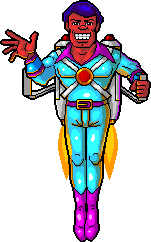

BACK THROUGH THE AIRLOCK TO 1999
An old game. A new way aboard.

The original Space Race
Captain Stubble’s Space Race combined action, logic puzzles, a comic space adventure and a Deck Designer. It played on the web through the ClickToons plug-in.
The website welcomed players with gold headings, cyan text, purple links and useful pages before the game. We’ve reused its original title-banner HTML and brought that spirit into this demo.
The browser revival
The demo uses recovered original artwork, WAV audio and saved deck layouts. Its controls and mechanics draw on the surviving game scripts.
The 14 layouts here are a selection of recovered decks, rather than the original campaign. Timing and some behavior are still being compared with the old game.
The old site’s plug-in downloads, login, high-score list and Global Deck Network belong to that historical version. You can play this demo directly, without an account.
Music from somewhere beyond Earth
Harry’s musical career was part of the joke, with songs such as Ageless Motion and The Electric Harry. The demo plays recovered music where available; matching all the original song titles to recordings is still in progress.